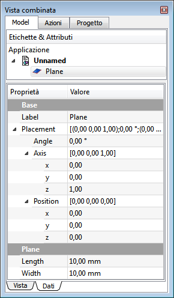

|
| Posizione nel menu |
|---|
| Part → Crea primitive... → Piano |
| Ambiente |
| Part, Completo |
| Avvio veloce |
| Nessuno |
| Vedere anche |
| Cono,Cilindro, Sfera, Toro, Crea primitive... |
Contents |
Crea un semplice Piano parametrico di 10 x 10 mm, con i parametri di posizionamento, lunghezza e larghezza.
Di default, il piano viene posizionato in corrispondenza dell'origine (punto 0,0,0).

Utilizzo
Il piano standard viene creato con l'angolo inferiore sinistro nel punto di origine 0,0,0.
Per modificare questi parametri aprire la sezione Posizione e inserire i valori desiderati nei rispettivi campi di input, oppure cliccare su Vista 3D e selezionare un punto, le coordinate del punto vengono acquisite dai campi.
Nel menu Direzione si può inoltre definire un vettore standard (X,Y o Z) normale al piano, oppure cliccare su Definito dall'utente... per aprire il dialogo che consente di impostare un diverso vettore (ad esempio la direzione 1,0,-1 crea un piano inclinato di 45° rispetto a X e Z).
Le proprietà possono essere modificate successivamente in Vista combinata → Dati, dopo aver selezionato l'oggetto.
Proprietà
|  |
VistaSono disponibili le Proprietà standard di visualizzazione. DatiBase
Plane
|
{kind=link}